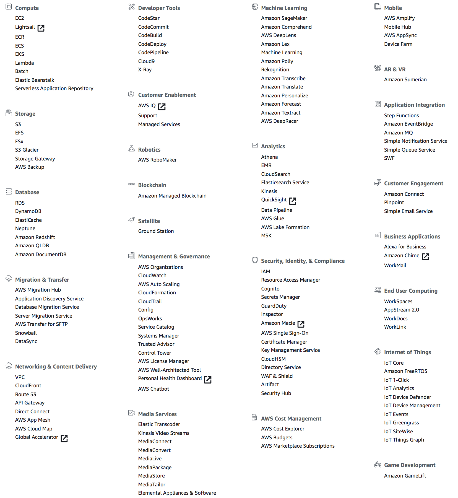

The Number of AWS Services
As a comprehensive, evolving cloud computing platform, it is always a moving target for the number of AWS services because it was being increased dramatically in the past years.
How many AWS Services are there?
As of the current date (Nov 2019), there are currently 147 top level services spread across 24 categories, spanning a wide range including computing, storage, networking, database, administration and security, analytics, application services, deployment, management, mobile, developer tools, tools for Internet of Things and more. Many of these top level services can further be expanded to multiple sub services, e.g. ESB, ELB, etc.
You can see all the services by logging into the AWS Console. Here is a snapshot that I took on my console:

As the plugin is integrated with a code management system like GitLab or GitHub, you may have to auth with your account before leaving comments around this article.
Notice: This plugin has used Cookie to store your token with an expiration.